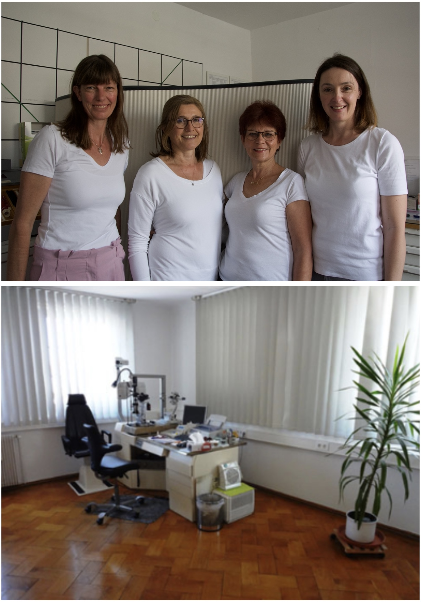
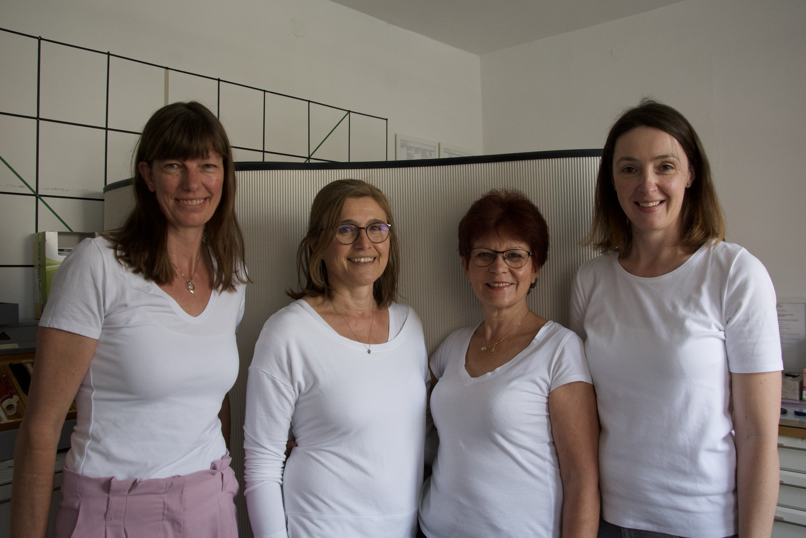

Katarakt (Grauer Star)
Betreuung von Patientinnen und Patienten mit Katarakt.
Ab 31. August 2026 finden Sie uns in der Kaiserstraße 57, 72764 Reutlingen.
Augenarztpraxis · Reutlingen
Herzlich willkommen in der Augenarztpraxis Dr. med. Karin König. Wir behandeln und betreuen sämtliche Erkrankungen des Auges – persönlich und mitten in Reutlingen.
Unsere Praxis


Wir freuen uns, dass Sie unsere Internetseite besuchen. Hier finden Sie alles Wichtige zu unserem Leistungsspektrum, unserer Praxis und unseren Sprechzeiten.
Ab dem 31. August 2026 finden Sie uns in unseren neuen Räumen in der Kaiserstraße 57 – bis dahin wie gewohnt am Marktplatz 1 im 1. Obergeschoss.
Leistungen
Von Bindehaut und Hornhaut über Iris und Netzhaut bis zum Sehnerv: Wir kümmern uns um Ihre Augen.
Betreuung von Patientinnen und Patienten mit Katarakt.
Untersuchung und langfristige Begleitung bei Glaukom.
Betreuung bei altersbedingter Makuladegeneration.
Augenuntersuchung von Kindern – von Anfang an gut sehen.
Eine gute Brillenanpassung ist uns wichtig.
Beratung bei Kontaktlinsenproblemen.
Sprechzeiten
| Tag | Vormittag | Nachmittag |
|---|---|---|
| Montag | 7:30 – 11:30 Uhr | 14 – 18 Uhr |
| Dienstag | 7:30 – 11:30 Uhr | — |
| Mittwoch | 7:30 – 11:30 Uhr | 14 – 18 Uhr |
| Donnerstag | 7:30 – 11:30 Uhr | — |
| Freitag | 7:30 – 11:30 Uhr | — |
In Kürze können Sie Ihre Termine bequem rund um die Uhr online buchen. Bis dahin erreichen Sie uns telefonisch während der Sprechzeiten.
Kontakt & Anfahrt
Kaiserstraße 57
72764 Reutlingen
Marktplatz 1, 1. Obergeschoss
72764 Reutlingen
07121 320424
Die Anfahrtskarte wird erst geladen, wenn Sie auf den Knopf klicken. Dabei wird Ihre IP-Adresse an OpenStreetMap übertragen.
Karte: OpenStreetMap – größere Karte öffnen